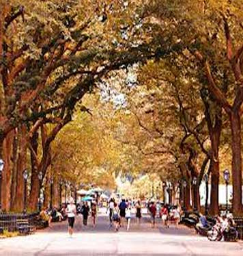

The Places You'll Go!
Central Park
|  |
Cost: Free!
|
|
The Central Park Conservancy was founded in 1980 by a group of dedicated civic and philanthropic leaders. They were determined to end Central Park's dramatic decline in the 1970s and restore it to its former splendor as America's first and foremost major urban public space, as envisioned by its 19th-century designers, Frederick Law Olmsted and Calvert Vaux. Today, the Conservancy's mission is to restore, manage and enhance Central Park, in partnership with the public, for the enjoyment of present and future generations. In 1998, the Conservancy and the City of New York signed a management agreement formalizing their then 18-year public-private partnership. The relationship was reaffirmed in 2006 when the agreement was renewed for an additional eight years. As the official manager of Central Park, the Conservancy is responsible for the day-to-day maintenance and operation of the Park. Presently, 90 percent of the Park's maintenance operations staff is employed by the Conservancy, which provides 85 percent of Central Park's $45.8 million annual Parkwide expense budget through its fundraising and investment revenue. The City, in addition to the annual fee to the Conservancy for the services it provides, funds lighting, maintenance of the Park drives and enforcement. |